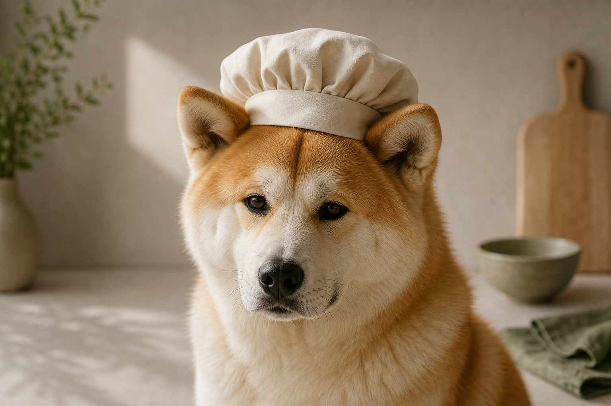
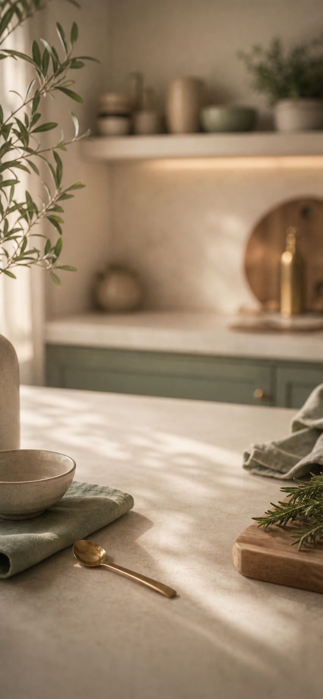
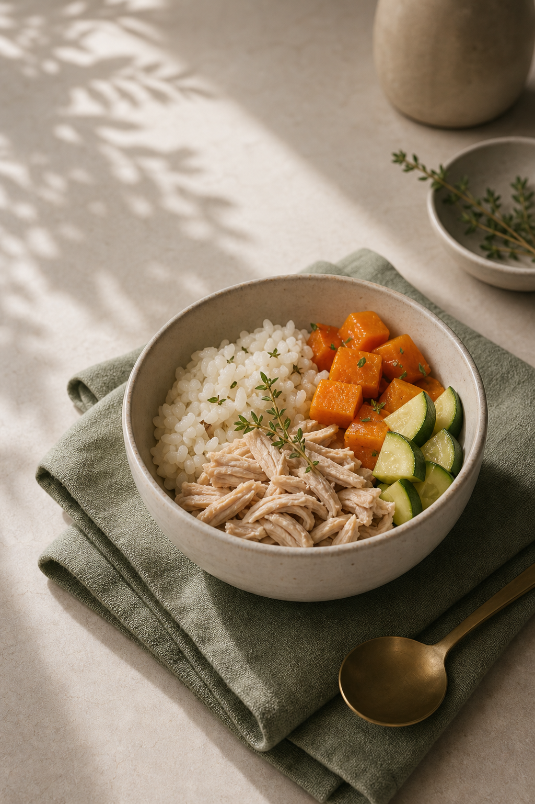

Luna
Menu preparado pelo Bistro
Ingredientes
Escolha o que o chef pode usar hoje.


Criado agora pelo Bistro
Delícia suave de frango com abóbora
Uma combinação macia e morna, criada para Luna a partir dos ingredientes que ela costuma gostar.
Ingredientes utilizados
- Frango
- Arroz
- Abóbora
Modo de preparo
- Cozinhe separadamente até ficar macio.
- Misture em textura delicada.
- Sirva morno.